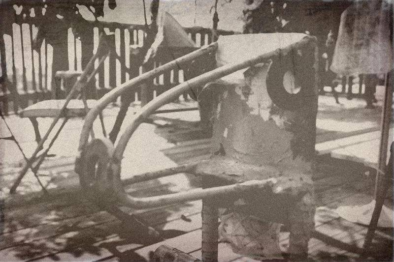
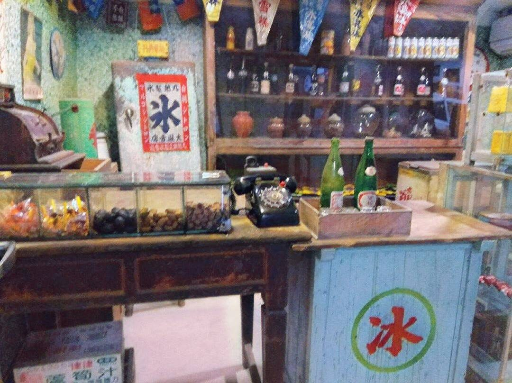
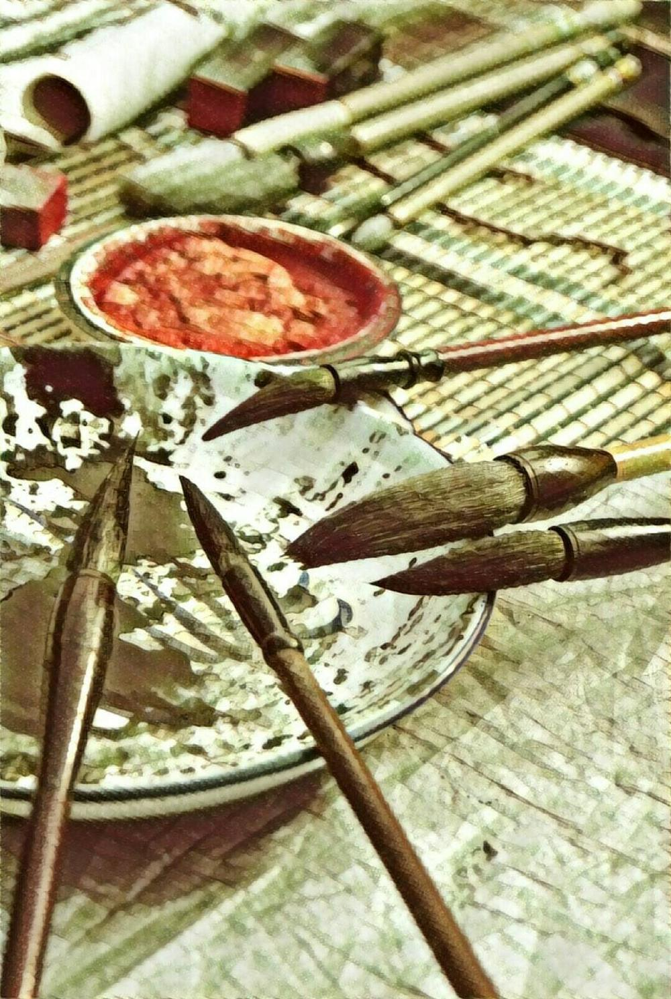
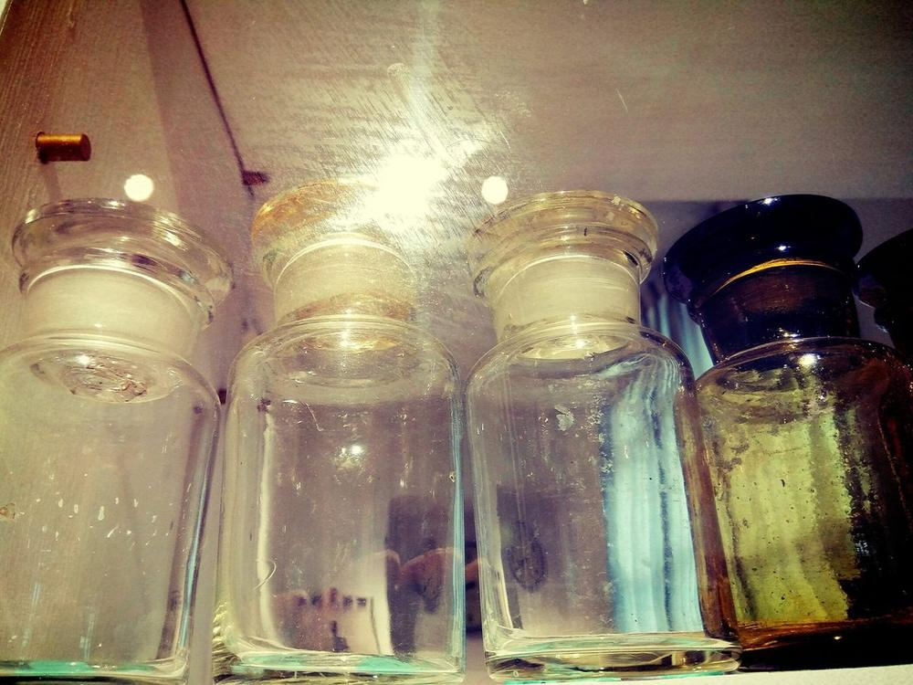
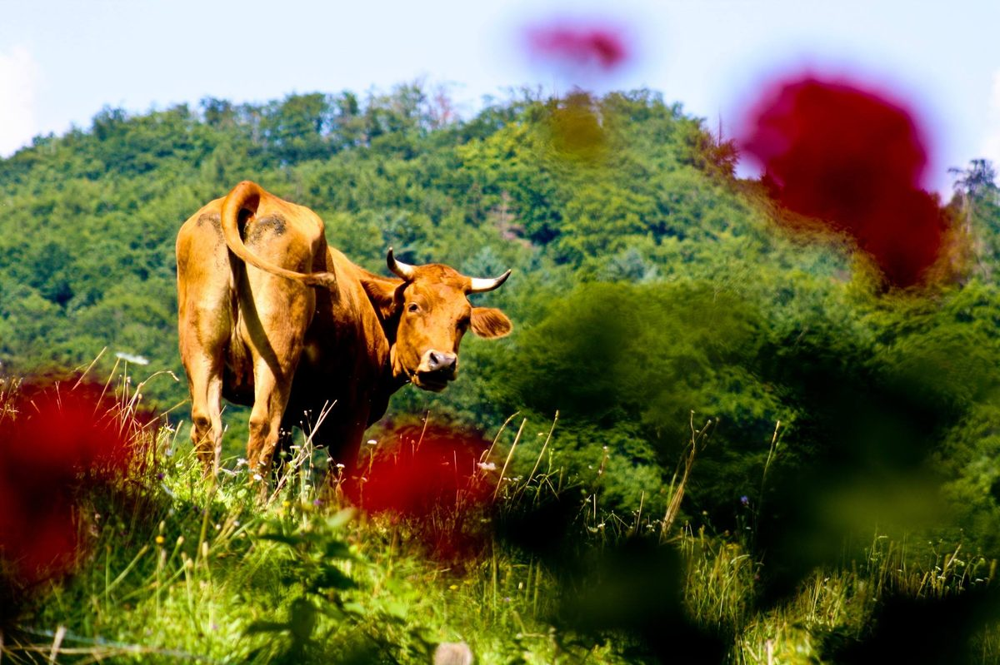
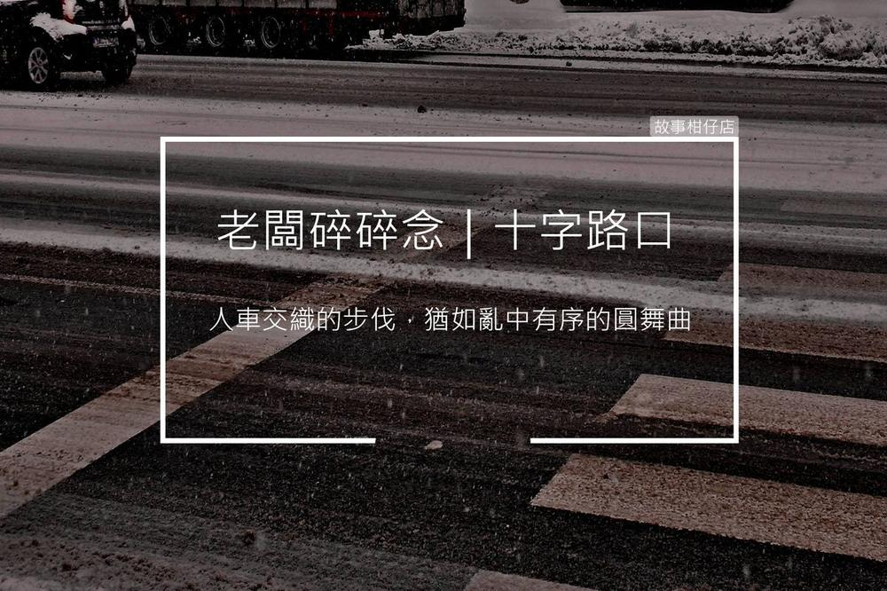
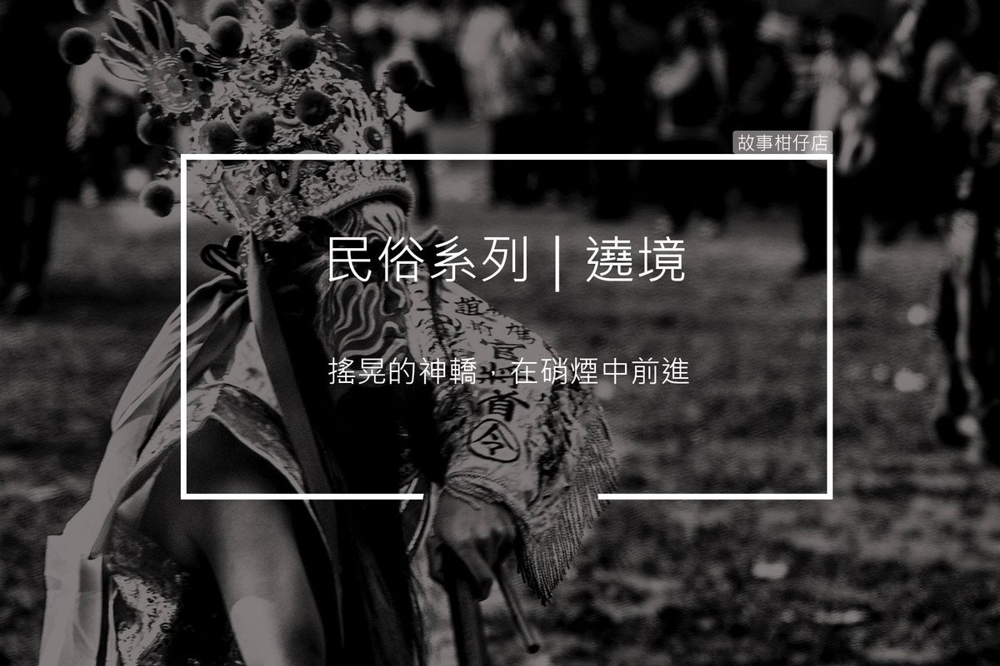

語巫2017-08-31
語巫2017-08-31 故事是甚麼｜搶語者老闆娘2017-09-01
故事是甚麼｜搶語者老闆娘2017-09-01 故事是甚麼｜賣語者老闆2017-09-02
故事是甚麼｜賣語者老闆2017-09-02
認識我們2017-09-02 故事是甚麼｜換語者店小二2017-09-06
故事是甚麼｜換語者店小二2017-09-06 故事是甚麼｜取語者黑貓2017-09-07
故事是甚麼｜取語者黑貓2017-09-07 故事是甚麼｜偷語者剪溜2017-09-08
故事是甚麼｜偷語者剪溜2017-09-08 鬼節好時光2017-09-16
鬼節好時光2017-09-16 神鬼人2017-09-23
神鬼人2017-09-23
老東西2017-09-30 偏方2017-10-07
偏方2017-10-07 跑龍套2017-10-14
跑龍套2017-10-14 天空之城2017-10-22
天空之城2017-10-22- 微光城市2017-10-28
 恍神2017-11-04
恍神2017-11-04 山有小口，彷彿若有光2017-11-11
山有小口，彷彿若有光2017-11-11 再見或再也不見2017-11-18
再見或再也不見2017-11-18
青史2017-11-25 大夜班2017-12-02
大夜班2017-12-02
故事瓶2017-12-09- 香灰2017-12-16
 驅魔2017-12-23
驅魔2017-12-23- 著魔2017-12-30
 鞭炮2018-01-06
鞭炮2018-01-06 算命仙2018-01-13
算命仙2018-01-13
老闆不在家2018-01-22- 黃牛2018-01-27
 生死2018-02-03
生死2018-02-03 善惡2018-02-10
善惡2018-02-10 廟口2018-03-17
廟口2018-03-17
十字路口2018-03-31 進香2018-04-14
進香2018-04-14
遶境2018-04-28 做功德2018-05-12
做功德2018-05-12